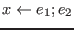
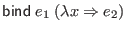
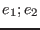
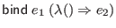
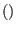
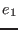
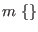
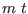
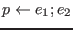
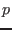

The Ur Basis defines the monad constructor class from Haskell.
The Ur/Web compiler provides syntactic sugar for monads, similar to Haskell's do notation. An expression  is desugared to  , and an expression  is desugared to  . Note a difference from Haskell: as the case desugaring involves a function with  as its formal argument, the type of  must be of the form  , rather than some arbitrary  .
The syntactic sugar also allows  for  a pattern. The pattern should be guaranteed to match any value of the corresponding type, or there will be a compile-time error.